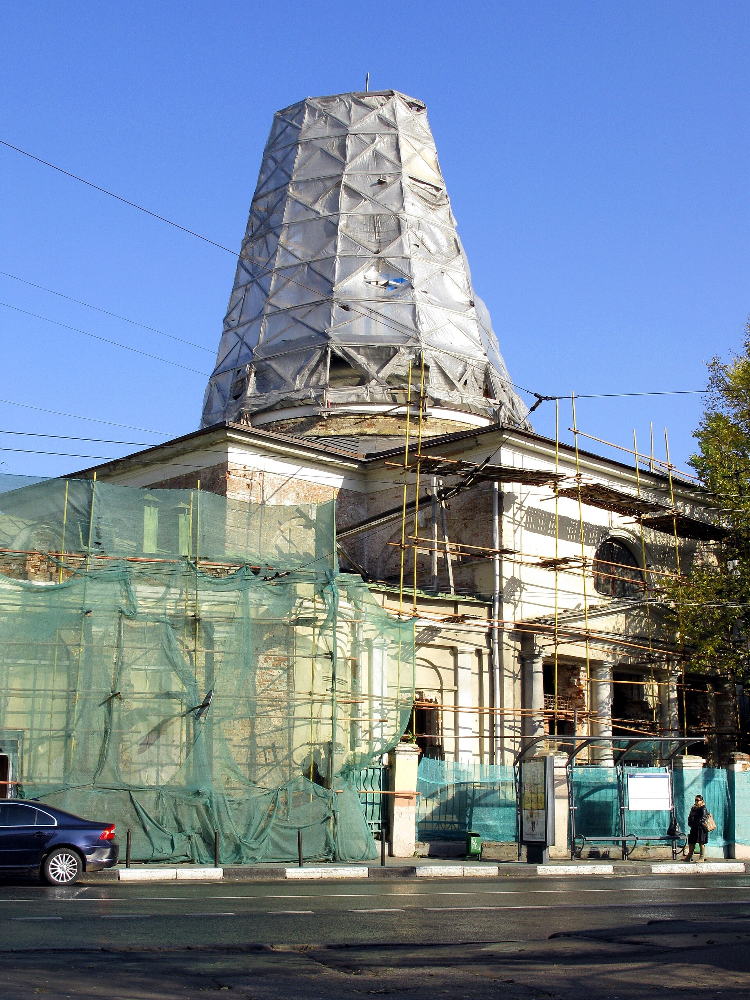

Ответ
Федеральный закон 384-ФЗ «Технический регламент о безопасности зданий и сооружений», СП 255.132.5800.2016, Гражданский кодекс, ст. 210 – устанавливают общие эксплуатационные требования, которые обязывают собственника объекта капитального строительства разработать положение по эксплуатации объекта, в том числе правила, порядок и условия проведения текущего ремонта, в том числе указать нормативную базу, на основании которой будет определяться стоимость текущего ремонта.

Методика 421/пр не обязательна для текущего ремонта и формально на него не распространяется.
Но заказчик вправе применить ее положения по своему решению, если решит определять стоимость текущего ремонта проектно-сметным методом с использованием ФРСН.
При этом применяются не все положения Методики, а только те, которые совместимы с текущим ремонтом.